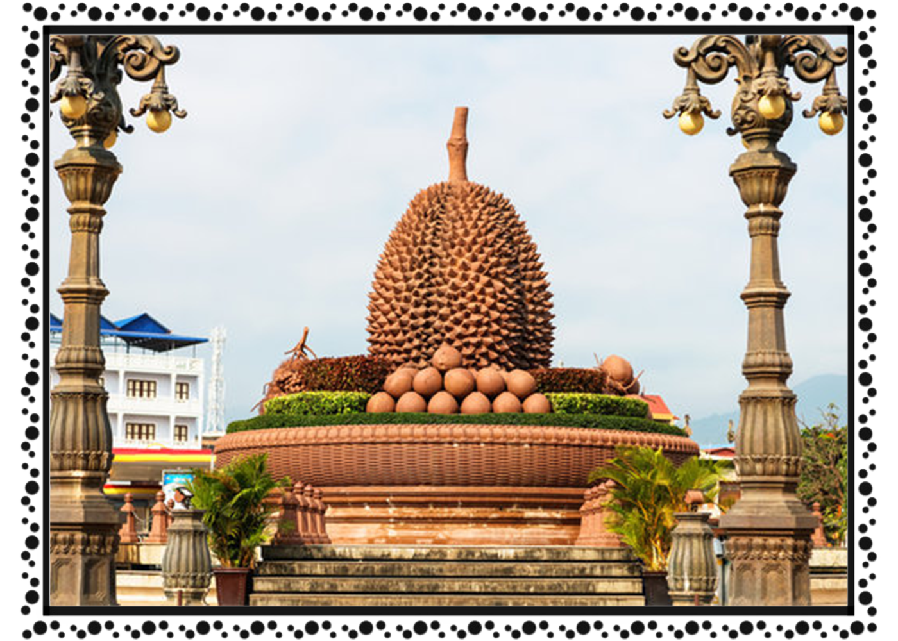

ខេត្ត និងក្រុងនៃព្រះរាជាណាចក្រកម្ពុជា
កំពត
 ខេត្តកំពត គឺជាខេត្តមួយស្ថិតនៅប៉ែកខាងត្បូងនៃប្រទេសកម្ពុជា ដែលមានចម្ងាយ ១៤៨ គ.ម. ពីទីក្រុងភ្នំពេញ មានព្រំប្រទល់ខាងជើងទល់នឹងស្រុកបរសេដ្ឋ ខេត្តកំពង់ស្ពឺ ខាងកើតជាប់នឹងស្រុកត្រាំកក់ និង ស្រុកគីរីវង់ ខេត្តតាកែវ ខាងត្បូងជាប់នឹងឈូងសមុទ្រ ខាងលិចជាប់នឹងស្រុកកំពង់សិលា និងស្រុកព្រៃនប់ ខេត្តព្រះសីហនុ ដូចគ្នាដែរ ខ្សែឆ្នេរដ៏វែងស្ថិតនៅលើឈូងសមុទ្រថៃទៅខាងត្បូង ខេត្តកំពតមានទីក្រុងឈ្មោះក្រុងកំពត។ កំពតមានប្រជាជន ៦២៧ ៨៨៤ នាក់[២] និងប្រកបដោយស្រុកនិងក្រុងចំនួនប្រាំបីដែលបានចែកទៅជាឃុំ-សង្កាត់ ៩២ ជាមួយនិងភូមិសរុប ៤៧៧ ភូមិ។[៣] ខេត្តកំពតមានសំណង់ប្រវត្តិសាស្រ្តជាច្រើនដូចជា ផ្ទះ ផ្សារលក់ទំនិញ រោងភាពយន្ត សាលារៀន ផ្លូវគមនាគមន៏ មន្ទីរពេទ្យជាដើម សុទ្ធសឹងជាភស្ដុតាង]បង្ហាញឱ្យឃើញពីការចាប់អារម្មណ៍របស់ពួកបារាំងទៅលើទឹកដីខ្មែរខេត្តកំពតមួយនេះ។ហើយក៏មានភ្នំបូកគោដែលជាទីចាប់អារម្មណ៍របស់ភ្ញៀវទេសចរណ៍ជាតិ និងអន្តរជាតិគ្រប់ៗរូបផងដែរ។ នៅលើនោះក៏មានកាស៊ីណូ និង មាន កន្លែងកម្សាន្តជាច្រើនដូចជា៖ វាលស្រែមួយរយ ទឹកធ្លាក់អាចមើលទេសភាព មកខាងក្រោមយ៉ាងស្រស់ស្អាត អាចចាប់ពពកបាន។-ល-។ ស្រុកទូកមាសបានតាំងទីនៅខេត្តកំពត។ទេសភាពនៃព្រែកកំពត មើលពីក្រុងកំពត ក្បែរសាលាខេត្ត ចំពីមុខភ្នំបូកគោ។ ខេត្ដតាកែវ បានចូលដែនរដ្ឋបាលខេត្ដកំពត នៅត្រង់ស្រុកជុំគី ត្រង់ចំនុចវត្ដពុទ្ធគីរី រហូតដល់ រមណីយដ្ឋានកំពូលពេជ្រ។ប្រភពបានឲ្យដឹងថា ខ្មែរយើងបានសរសេរនិងអានពាក្យប្រជុំជន កំពត ថា គុម្ពត ឬ កំពោត ដែលពាក្យនេះ បានក្លាយទៅជាឈ្មោះខេត្ត ហើយឈ្មោះនេះត្រូវបានគេហៅដោយសំដៅទៅលើភូមិមួយ ដែលអ្នកស្រុកស្គាល់ពីយូរលង់ណាស់មកហើយ ស្ថិតនៅព្រែកកំពត ដែលមានប្រភពមកពីភ្នំដំរី។ ហើយនៅខាងលើដៃព្រែកកំពតបន្តិច ដែលជាទីប្រជុំជនចិនរស់នៅ ហៅភូមិព្រៃស្តុក(ម្តុំអណ្ដូងខ្មែរ) យ៉ាងក៏ដោយ ពាក្យថា គុម្ពត និងកំពោត គេពុំដែលយល់ស្របទៅលើដើមកំណើត និង ឫសគល់នៃពាក្យនេះឡើយ។ ក្នុងនោះ តាមសម្ដីអ្នកខ្លះតំណាលថា មានស្ត្រីអ្នកមានធនធានចតុស្តម្ភម្នាក់ឈ្មោះ នាង ពត ដែលបានរស់នៅទីនោះជាអ្នកមានឥទ្ធិពល និងទទួលការលើកតម្កើងយ៉ាងខ្លាំងពីអ្នកស្រុកភូមិផងរបងជាមួយ ដោយសារភោគទ្រព្យមហាសាលរបស់នាង ហើយអ្នកស្រុកបានប្រមូលផ្តុំគ្នាមករស់នៅជុំវិញស្ត្រីនោះ តាមបែបសាជីវកម្ម គឺរបៀបជាក្រុមមួយ។ តំណក្រោយមក ពាក្យថា "ក្រុម" នេះក្លាយមកជាពាក្យ "កុម" ដូចនេះនៅជាប់ភូមិឋាននៃក្រុមរបស់នាង ពត មានឈ្មោះជាបន្តបន្ទាប់ថា ក្រុមនាងពត រួចក្រុមពត។ ងាកមក រឿងនិទានមួយប្រហាក់ប្រហែលគ្នានេះដែរ បានតំណាលពីស្ដេចព្រះរាម នាសម័យបែកបាក់លង្វែក ដែលបានរត់គេចចេញពីការបះបោរក្នុងរាជវាំង ហើយភៀសព្រះកាយមកគង់នៅជាមួយមហេសីម្នាក់ រួមទាំងពួកអាមាត្យស្មោះត្រង់មួយចំនួន។ បន្ទាប់មកទៀត មហេសីដែលមាននាមថា អ្នកម្នាង ពត មានជំងឺរួចក៏ស្លាប់នៅទីនោះ ក្រោយមក ដើម្បីជាអនុស្សាវរីយ៍យូរលង់តទៅ ចំពោះស្ត្រីដែលព្រះអង្គសព្វព្រះទ័យជាងគេ ជាពិសេសព្រះអង្គក៏ប្រទានឈ្មោះកន្លែងនោះថា កំពត។